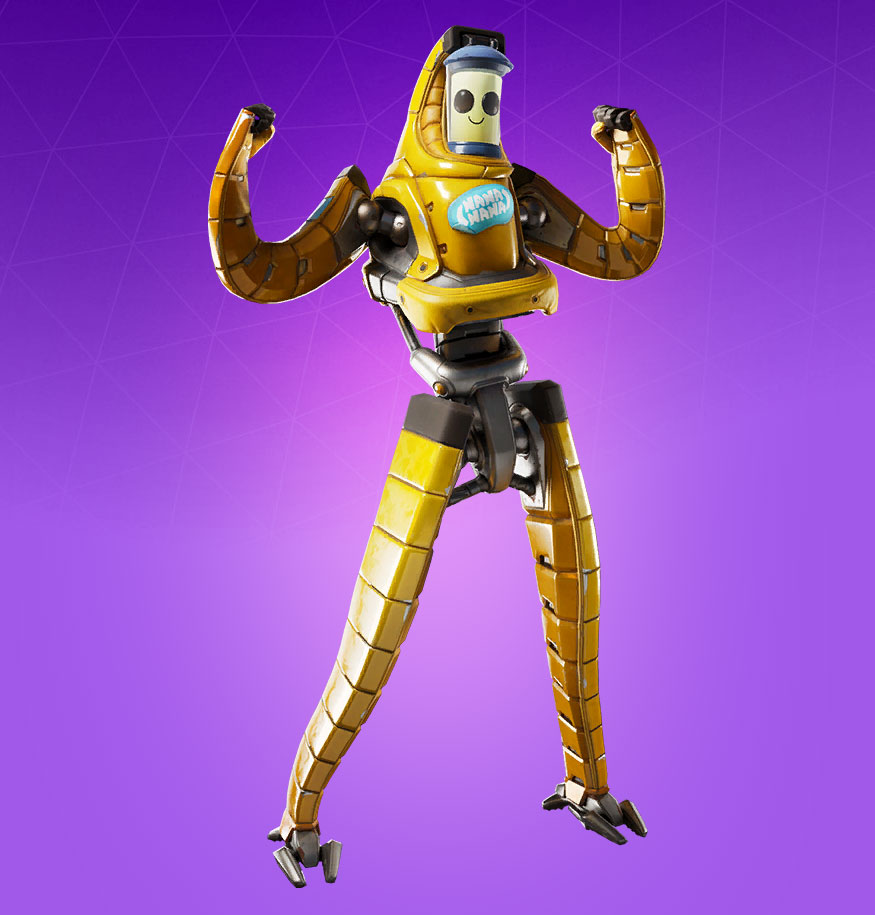
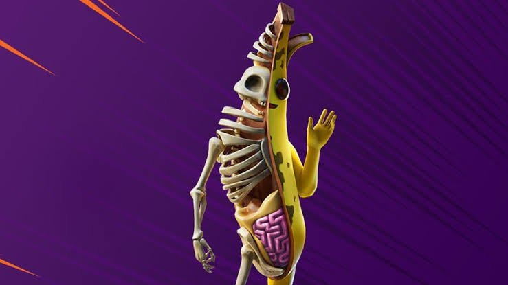
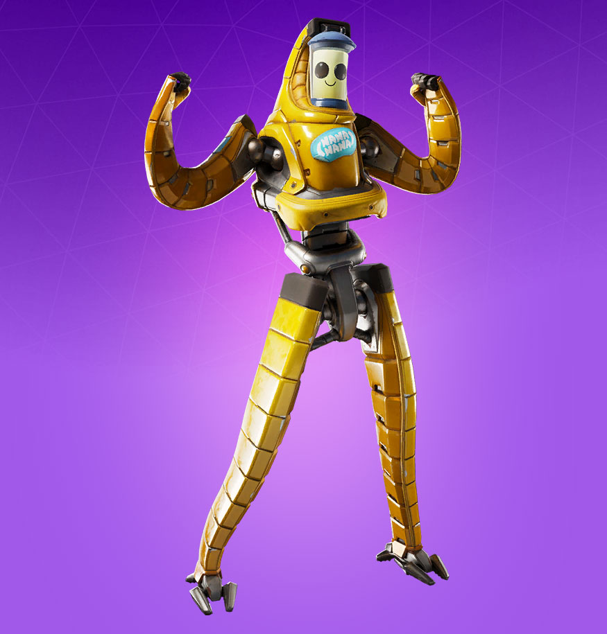
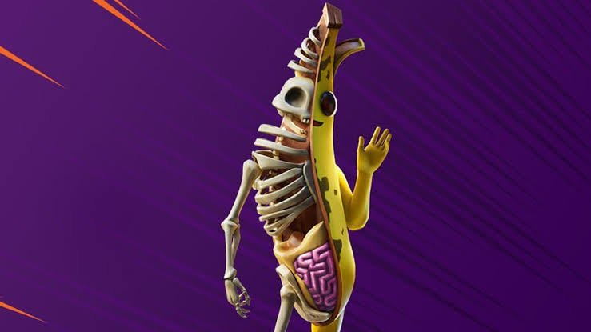

Experiencia laboral
· Peely : plátano vivo

· Smoothie : batido de plátano vivo
· P-1000 : batido de plátano como cabeza de un robot
· Peely Bone : mitad plátano mitad hueso
· Agente Peely : agente de plátano vivo
Banda sonora Temporada 1 Capítulo 2
Hola soy Peely, aunque se me suele reconer más por ser el plátano del Fortnite.
Soy una de las skins más queridas.
Además de conocerme por este juego, también lo podréis hacer por los multiples
cambios que he sufrido a lo largo de mi trayectoría en dicho juego, pero eso lo veremos mas adelante
· Ingeniería de materiales
· Ingeniería de de caminos, canales y puertos
· Master en armas ligeras, armas pesadas y explosivos
· Peely : plátano vivo
· Smoothie : batido de plátano vivo
· P-1000 : batido de plátano como cabeza de un robot
· Peely Bone : mitad plátano mitad hueso
· Agente Peely : agente de plátano vivo